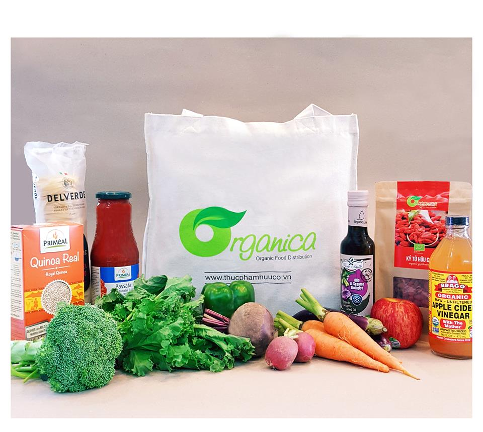

giới thiệu
Organica là hệ thống phát triển và phân phối thực phẩm hữu cơ được thành lập vào đầu năm 2013 với mục tiêu giúp người tiêu dùng Việt Nam có một cuộc sống khỏe mạnh hơn thông qua những loại thực phẩm hữu cơ có chứng nhận, thực phẩm tự nhiên và không có nguồn gốc biến đổi gene (GMO).
Thực phẩm hữu cơ Organica có chứng nhận quốc tế, hoàn hảo cho sức khỏe của mẹ và bé cũng như gia đình bạn.Vào năm 2015, sau nhiều nỗ lực tự phát triển và sản xuất, trang trại Organica tại Long Thành, Đồng Nai đã được cấp chứng nhận hữu cơ của Mỹ (USDA) và Liên minh châu Âu (EU), trở thành trang trại rau nhiệt đới hữu cơ đầu tiên ở Việt Nam. Tiếp nối sau đó, năm 2017 vườn Organica Ba Vì cũng đã được tổ chức Control Union đánh giá đạt tiêu chuẩn hữu cơ của Mỹ và châu Âu. Organica còn sử dụng Traceverified, dịch vụ truy xuất nguồn gốc điện tử duy nhất của Việt Nam, với mong muốn minh bạch thông tin và cam kết quá trình canh tác hữu cơ của mình với người tiêu dùng.


Ngoài các trang trại hữu cơ tự đầu tư, hiện Organica cũng đang liên kết và hỗ trợ nông dân ở nhiều địa phương chuyển đổi sang canh tác hữu cơ tiến tới lấy chứng nhận hữu cơ quốc tế để bao tiêu sản phẩm.
Bên cạnh các sản phẩm phát triển tại các trang trại, Organica cũng phối hợp với các đơn vị khác có chứng nhận hữu cơ để phân phối các sản phẩm đến tay người tiêu dùng VN và nhập khẩu các sản phẩm hữu cơ để phân phối trong nước. Đến nay, Organica đã có gần 1.000 mặt hàng có chứng nhận hữu cơ các loại bao gồm các loại thực phẩm tươi, thực phẩm khô, các loại gia vị hữu cơ, mỹ phẩm hữu cơ, sản phẩm chăm sóc gia đình đến các sản phẩm chăm sóc cá nhân làm từ bông (cotton) có chứng nhận hữu cơ quốc tế. Hiện Organica đang làm việc với các đối tác tại Mỹ và EU để đưa về VN các sản phẩm hữu cơ còn thiếu tại VN để hoàn thiện các chủng loại sản phẩm hữu cơ đáp ứng yêu cầu của khách hàng.
Theo cam kết từ khi mới thành lập, các cửa hàng Organica dành 80% diện tích trưng bày và chủng loại sản phẩm để bán các loại thực phẩm hữu cơ có chứng nhận trong và ngoài nước. 20% còn lại dành cho các sản phẩm đang trong quá trình chuyển đổi sang canh tác hữu cơ, sản phẩm tự nhiên có chứng nhận thân thiện với môi trường (như MSC- Khai thác thủy sản bền vững; hay UTZ- chứng nhận phát triển bền vững cho ca cao, cà phê và trà), và một phần nhỏ trong đó là sản phẩm đặc sản địa phương. Tất cả các sản phẩm này đều có các chứng nhận về vệ sinh an toàn thực phẩm và truy xuất được nguồn gốc.
"Organica có trang trại rau nhiệt đới đầu tiên tại Việt Nam đạt chứng nhận hữu cơ
của Bộ Nông nghiệp Mỹ (USDA) EU Organic Farming (Liên minh châu Âu) "